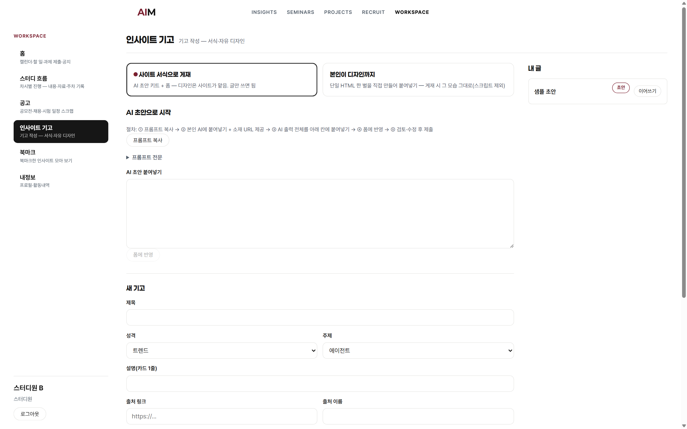
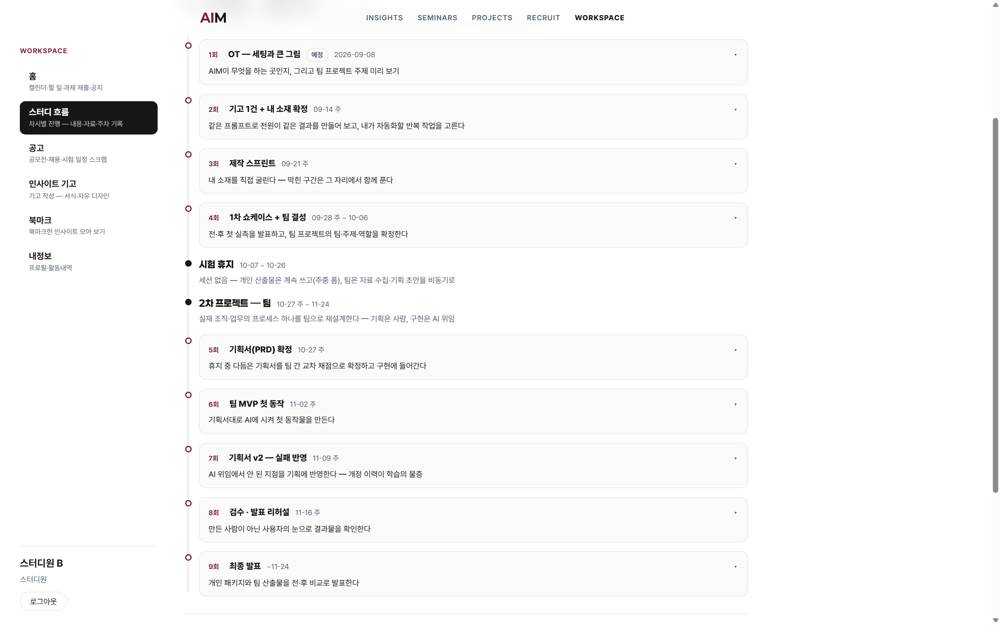
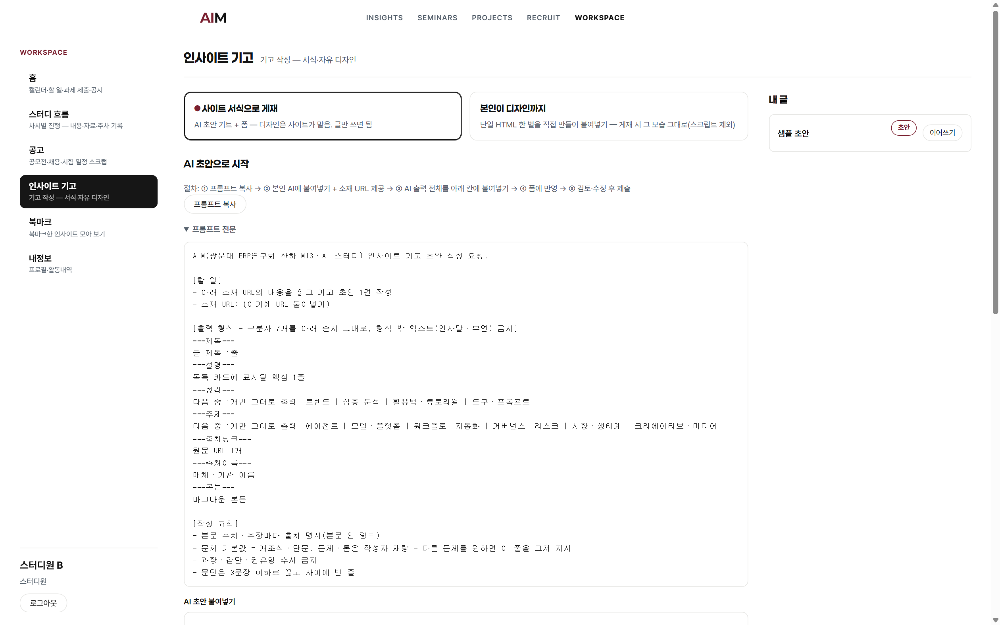

기고 1건과 내 소재 확정
산출물 2 = 기고 1건 · 소재 카드와 미니 PRD · 60분

오늘 제출할 곳 = 워크스페이스 기고 탭
블록 배분 15/20/25분 · 파트별 대표 아이콘 = 각 파트 디바이더에서 재등장 · 검수가 본체
상황 · 문제 · 질문 순서로 오늘의 범위를 좁힘 · 질문 1개가 이 회차가 답할 것
브리프 = AI에 주는 작업 지시서 · 위임 = 시키고 결과를 사람이 검수하는 방식
가장 작은 크기로 루프 1회 · 산출물 = 기고 1건
같은 루프에 소재 투입 · 산출물 = 소재 카드와 미니 PRD
이 파트에서 얻는 것 = 시작 전 갖출 것 4건 · 설치 0
사전 조건은 이 4건이 전부 · 미충족 항목은 이 자리에서 해결
도구 지정 없음. 본인이 이미 쓰는 챗봇이면 됨. 무료 한도에 걸렸을 때의 대처도 오늘 학습 범위.
기고 제출 경로. 로그인이 되지 않으면 운영진에게 계정 상태를 확인받음.
로드맵 탭 > 회차 2 자료에서 수령. 기고 키트·소재 카드·미니 PRD 한 벌.
세션에서 전원 동일 배포. 결석자는 세션 자료의 예비 소스 목록에서 1건 선택.
받는 위치는 한 곳 · 세 자료가 오늘의 블록 1·2·3에 하나씩 대응

회차 클릭 = 그 회차의 자료와 완료 조건 펼침
따라 치기용 프롬프트 전문과 검수 절차. 블록 1·2에서 사용.
내 소재가 학기 내내 굴릴 값어치가 있는지 카드가 판정.
확정된 소재를 위임 가능한 형태로 바꾸는 양식. 블록 3에서 사용.
이 파트에서 얻는 것 = 브리프 4블록 구조를 손으로 통과시켜 체득
시작 = 키트의 프롬프트를 전원 그대로 1회 실행 · 결과는 각자 다르게 나옴
프롬프트가 제각각이면 결과 차이가 지시문 탓인지 모델 탓인지 구분 불가.
키트의 4블록 구조를 고치지 않고 그대로 통과시켜 순서를 몸에 붙임.
같은 소스 기사, 지시문 구조만 교체 · 판정 기준 = 결과를 검수할 지점이 있는가
맞고 틀림을 가를 기준 없음 · 검수할 지점도 미확보.
기준으로 판정 가능 · 확인법이 검수 지점을 선확보.
실행 1회 후 소스 교체 1회 = 총 2회 실행 · 나머지 3블록은 고정
붙여넣기에서 [확인법] 블록이 잘린 경우. 마지막 줄까지 들어갔는지 확인 후 재요청.
다른 챗봇에 같은 프롬프트를 그대로 입력. 도구를 갈아타도 브리프는 통함.
이 파트에서 얻는 것 = 초안을 제출물로 바꾸는 3동작 · 여기가 오늘의 본체
초안은 제출물이 아니라 검수 대상
초안 생성이 아니라 검수가 오늘의 본체 · 블록 2에 배정된 시간이 이 작업의 몫
판정 기준 = 본문의 모든 문장에 "소스 기사에 있다"고 본인이 답할 수 있는가
시작점 = 초안 끝의 "검수 필요 항목" 목록 · 순서대로 공개 버튼으로 진행
기본 트랙(키트+폼)으로 제출 · 승인 대기 상태여도 다음 단계로 진행

기고 탭 = 키트와 제출 폼이 한 화면
워크스페이스 안 기고 탭에서 기본 트랙 선택.
내용 채점 없음. 주장·관점은 무수정 게재.
500자 아래면 소스 기사의 근거 있는 사실로 1~2줄 추가.
이 파트에서 얻는 것 = 학기 내내 굴릴 내 소재 1개와 미니 PRD 5칸
문항 4개 = 거르는 대상이 각각 다름 · 기입 시점 = 오늘 이 자리
거르는 것 = 일회성 소재 · 반복이 없으면 학기 내내 굴릴 대상이 아님
거르는 것 = 어림 수치 · 실측이 없으면 학기말 전·후 비교가 불가
거르는 것 = 위임 불가 소재 · 내 역할이 확인으로 줄지 않으면 구조 불성립
거르는 것 = 용처 없는 소재 · "나만 본다" = 반려, 완성 판정 기준 없음
축을 눌러 체크 · 판정 주체 = 본인 · F가 하나라도 남으면 소재 교체
문항 4가 이 답으로만 채워지면 반려. 제출·공유·의사결정에 닿는 반복 작업으로 교체.
일부 문항 보완이 아니라 새 소재로 카드를 다시 작성.
본인 눈에 구체적인 답이 남의 눈에는 빈칸인 경우가 많음 · 시점 = 카드 작성 직후
작성한 소재 카드를 옆 사람에게 전달. 질문 3개를 그대로 받음.
답이 막히는 문항.
막힌 문항만 고쳐 같은 절차로 다시 확인. 나머지 문항은 그대로.
남의 눈에도 읽히는 답만 남김.
확정된 소재를 반 장 분량으로 기입 · 칸별 역할이 다름 · 채우는 순서 = 1에서 5
"나는 ___할 때마다 ___가 문제다(주 ___회)" · 소재 카드 문항 1·2의 압축
지금 방식의 소요를 언제·어떻게 1회 잴지 · 실측 공란 = 학기말 개선 증명 불가
"___가 되면 완성"을 참·거짓 판정이 가능한 한 문장으로 · 이 칸이 첫 위임의 지시문
"___면 접는다" · 폐기 조건이 없으면 실패해도 종료되지 않고 늘어짐
v1 시점 = 빈칸이 정상 · v1로 끝나면 위임을 실행하지 않은 것
5칸을 채운 뒤 두 유형만 따로 훑음 · 발견 시 수정이 아니라 삭제
칸 3의 완성 기준을 참·거짓으로 판정할 수 없게 만드는 표현.
결과 = 완성 판정이 무너짐
소재가 아니라 특정 도구에 문서를 묶는 표기.
결과 = 도구 교체 시 PRD 동반 폐기
측정 불가 단어와 도구명 두 유형만 따로 확인.
자가 점검에서 남은 표현이 지적 대상.
PRD 칸 3을 그대로 지시문으로 전환 · 형식 = 따라 치기에서 쓴 브리프 틀 재사용
이 파트에서 얻는 것 = 오늘 판정 2건 확인과 다음 회차 준비물
항목을 눌러 체크 · 판정 2건 = 기고 제출과 소재 카드 통과
소스 기사 대조와 삭제까지 끝낸 본문 · 승인 대기 상태 포함
워크스페이스 기고 탭4문항 기입 · 셀프 판정 4축 전부 T · 교차 확인 보완분 반영
학기 내내 굴릴 소재 1개칸 3 완성 기준 T/F · 칸 5 개정 이력 v2 1줄
첫 위임 실행 후 기록소재 카드가 반려면 소재를 교체해 다시 작성 · 판정은 카드가 하므로 승인 대기 없음
위임 = 브리프를 주고 검수로 마감
제작 스프린트 = 오늘 고른 소재를 돌아가는 상태로
다음 회차 = 09-21 주 · 공지 = 워크스페이스
이 덱의 외부 인용 수치 = 0건 · 본문 장 각주 표기 없음
| NO | 자료 | 구성 | 받는 곳 |
|---|---|---|---|
| 01 | 세션 자료 3종 | 기고 키트 · 소재 카드 · 미니 PRD | 로드맵 탭 > 회차 2 자료 |
| 02 | 프롬프트 전문 · 재현 절차 | 0~9단계 전문 · 막힘 대처 3건 | 세미나 상세 「재현 가이드」 |
| 03 | 외부 인용 수치 | 0건 · 이 덱의 수치는 세션 진행 값 | 출처 표기 대상 없음 |
로드맵 탭 > 회차 2 자료 접근이 막히면 운영진에게 계정 상태 확인 요청
세션 배포본이 없으면 세션 자료의 예비 소스 목록에서 선택 · 절차는 동일